Analysis of Beijing Weather and Pollution, 2017
# To create a tibble and manipulate the df that way.
library(tidyverse)
# Load this library for easily calculating the AQI.
library(con2aqi)
# Open air allows windroses to be plotted.
library(openair)
# Color pallette "WesAnderson"
library(wesanderson)
wes.colors <- names(wes_palettes)
# Color pallette to use instead of WesAnderson pallette
library(RColorBrewer)
colorbrew <- row.names(RColorBrewer::brewer.pal.info)
# For using subplots
library(plotly)
# For strata sampling
library (sampling)1 Introduction
1.1 Outline
This analysis is done on pollution and weather information in Beijing. This data was chosen to investigate sky conditions and the levels of pollutants in Beijing to see if there is correlation between meteorological conditions and the levels of pollution.
This presentation will:
Introduce the datasets and the steps taken to transform the data.
Analyze sky conditions in Beijing.
Introduce and analyze AQI pollution levels in Beijing.
Test the Central Limit Theorem on the AQI data.
Compare the distribution of samples to the distribution of the population.
Analyze the relationship between wind speed, wind direction, and pollution.
Make recommendations for further analysis and conclude.
1.2 Dataset
def.par <- par()
scipen <- 10
# Grabs the names of the CSV files.
local.files <-
list.files(
"C:/Users/troya/OneDrive/R/CS544_FinalProject_Ascher/Datasets/Dataverse/"
)
local.dir <-
"C:/Users/troya/OneDrive/R/CS544_FinalProject_Ascher/Datasets/Dataverse/"
# Create variables names
var.names <- paste("wd",local.files, sep = "_")
# Function for loading the files
grab.and.format <-
function(location, vec) {
for (i in vec) {
x <-
read.csv(
paste(
location,
i,
sep = ""
),
header = TRUE
)
return(x)
}
}
# Create the files
for (i in seq(1, length(var.names))){
assign(var.names[i], grab.and.format(local.dir, local.files[i]))
}
# Remove unnecessary objects.
remove(var.names)1.2.1 Source
The data is from two data-sets from Harvard’s Dataverse in the form of a study by Wang (2019). The data was provided by the Ministry of Environmental Protection (MEP) of China and the National Oceanic and Atmospheric Administration (NOAA). The data-sets include 311010 hourly observations from pollution monitoring stations in Beijing, and 158047 hourly observations from pollution monitoring stations.
The observations included in the datasets are:
MEP (pollutant) data:
for (i in names(wd_beijing_17_18_aq.csv)) {
print(i)
}## [1] "stationId"
## [1] "utc_time"
## [1] "PM2.5"
## [1] "PM10"
## [1] "NO2"
## [1] "CO"
## [1] "O3"
## [1] "SO2"NOAA (weather) data:
for (i in names(wd_beijing_17_18_meo.csv)) {
print(i)
}## [1] "station_id"
## [1] "longitude"
## [1] "latitude"
## [1] "utc_time"
## [1] "temperature"
## [1] "pressure"
## [1] "humidity"
## [1] "wind_direction"
## [1] "wind_speed"
## [1] "weather"1.2.2 Data Manipulation
The following steps were taken to combine the data.
Merge datasets into one frame based on shared station Ids.
Combine datasets into one dataframe based on station Id
# Identify which stations are in each dataset by removing the suffix, merging # the characters into two columns in a dataframe, and then checking which values # are in each column. # Format Dataframe station names so that they can be compared between lists and # used as a key value when combined with date. wd_beijing_17_18_aq.csv$stationId <- substring(wd_beijing_17_18_aq.csv$stationId, 1, nchar(wd_beijing_17_18_aq.csv$stationId) - 3) wd_beijing_17_18_meo.csv$station_id <- substring(wd_beijing_17_18_meo.csv$station_id, 1, nchar(wd_beijing_17_18_meo.csv$station_id) - 4) # Get the unique station names from each list. aq.names <- unique(wd_beijing_17_18_aq.csv$stationId) meo.names <- unique(wd_beijing_17_18_meo.csv$station_id) # Merge unique names into a dataframe of two columns. temp.names <- merge(aq.names, meo.names) # Identify which stations are in each dataset. Can use this as a key. temp.names <- subset(temp.names, temp.names$x == temp.names$y) # Create new datasets of air and weather that only contain the stations that are # in each dataset. raw.air <- subset(wd_beijing_17_18_aq.csv, wd_beijing_17_18_aq.csv$stationId %in% temp.names$x) for (i in unique(raw.air$stationId)) { print(i) }## [1] "daxing" ## [1] "fangshan" ## [1] "huairou" ## [1] "mentougou" ## [1] "miyun" ## [1] "pingchang" ## [1] "pinggu" ## [1] "shunyi" ## [1] "tongzhou"raw.meo <- subset(wd_beijing_17_18_meo.csv, wd_beijing_17_18_meo.csv$station_id %in% temp.names$x) # Remove the original dataframes and unnecessary objects. remove(aq.names, meo.names, temp.names, i) # Check that the unique values match. # unique(raw.air$stationId) %in% unique(raw.meo$station_id) # unique(raw.meo$station_id) %in% unique(raw.air$stationId)Delete data for stations that don’t exist in each data-set and remove any rows containing NA.
# Create a key value based on date and station name in each dataset. raw.air$PKID <- paste(raw.air$stationId, raw.air$utc_time, sep = "_") raw.meo$PKID <-paste(raw.meo$station_id, raw.meo$utc_time, sep = "_") # Merge dataframes based on PKID. raw.data <- merge(raw.air, raw.meo, by="PKID") # Remove unneeded dataframes, save the combined raw data. remove(raw.air, raw.meo) # Create a working dataframe with only columns needed and no NA values. cn.atmos <- subset(raw.data, select = -c(utc_time.y, station_id)) # Remove extreme values cn.atmos$PM2.5[cn.atmos$wind_speed > 30] <- NA # Remove NA values paste("NA count before removal:",sum(is.na(cn.atmos$PM2.5)), sep = " ") # 3219## [1] "NA count before removal: 3220"cn.atmos <- na.omit(cn.atmos) paste("NA count after removal:",sum(is.na(cn.atmos$PM2.5)), sep = " ") # 0## [1] "NA count after removal: 0"Use ‘con2air’ library to calculate the AQI based on pollutant levels for each reading.
# ------ The following section deals with formatting values in order to # ------ calculate the US EPA's AQI value based on measured pollutants. # Units need to be converted to AQI for easier reading. # Alter PM10 Values greater than 604 (EPA guidelines do not go that high) to the # max value. cn.atmos$PM10 <- replace(cn.atmos$PM10, cn.atmos$PM10 > 604, 604) # convert units from ug to MG Conversion formula from: # https://cfpub.epa.gov/ncer_abstracts/index.cfm/fuseaction/display.files/fileid/14285 # https://www.teesing.com/en/page/library/tools/ppm-mg3-converter cn.atmos$NO2 <- (24.45 * cn.atmos$NO2 / 46.01) cn.atmos$CO <- 24.45 * cn.atmos$CO / 28.01 cn.atmos$O3 <- (24.45 * cn.atmos$O3 / 48.00) / 1000 cn.atmos$SO2 <-(24.45 * cn.atmos$SO2 / 64.06) # Use con3aqi libary to convert values to US AQI standard. cn.atmos$PM2.5 <- con2aqi(pollutant="pm25",con=cn.atmos$PM2.5) # Works cn.atmos$PM10 <- con2aqi(pollutant="pm10",con=cn.atmos$PM10) # works cn.atmos$O3 <- con2aqi(pollutant="o3",con=cn.atmos$O3, type = "1h") cn.atmos$NO2 <- con2aqi(pollutant="no2",con=cn.atmos$NO2) # Works cn.atmos$CO <- con2aqi(pollutant="co",con=cn.atmos$CO) # works cn.atmos$SO2 <- con2aqi(pollutant="so2",con=cn.atmos$SO2) # Works # Calculate AQI count <- 1 for (i in seq(0, length(cn.atmos$PKID) - 1)) { cn.atmos$AQI[count] <- max(c( cn.atmos$PM2.5[count], cn.atmos$PM10[count], cn.atmos$NO2[count], cn.atmos$CO[count], cn.atmos$O3[count], cn.atmos$SO2[count] )) count <- count + 1 }Reformat date as UTC standard and add year, day, and month columns and convert units from metric to imperial.
# Create a chart of Latitude and Longitude for map use cn.geo <- unique(subset(cn.atmos, select = c("stationId", "longitude", "latitude"))) cn.atmos <- subset(cn.atmos, select= -c(longitude, latitude)) # reformat the date column for use with the windrose names(cn.atmos)[3] <- "date" cn.atmos$date <- as.POSIXct(cn.atmos$date, tz = "UTC") # Convert temp to Farenheit # (0°C × 9/5) + 32 = 32°F cn.atmos$temperature <- round((cn.atmos$temperature * 9/5) + 32) # Convert wind speed to mph cn.atmos$wind_speed <- round(cn.atmos$wind_speed * 2.23694) # Create date field for calculating values by day. cn.atmos$day_date <- substring(cn.atmos$date, 1, 10) # Add decatenated date columns. cn.atmos$year <- str_sub(cn.atmos$day_date, start = 1, end = 4) cn.atmos$month <- str_sub(cn.atmos$day_date, start = 6, end = 7) cn.atmos$day <- str_sub(cn.atmos$day_date, start = 9, end = 10)Add columns with AQI warning messaging and colors as defined by the EPA.
# Create AQI Colors and levels according to EPA guidelines. aqi.col <- c("Green", "Yellow", "Orange", "Red", "Purple", "Maroon") aqi.range.high <- c(50, 100, 150, 200, 300, 500) aqi.range.low <- c(0, 51, 101, 151, 201, 301) aqi.html <- c("#00e400", "#ffff00", "#ff7e00", "#ff0000", "#8f3f97", "#7e0023") col.r <- c(0, 255, 255, 255, 143, 126) col_g <- c(228, 255, 126, 0, 63, 0) col.b <- c(0, 0, 0, 0, 151, 35) aqi.message <- c( "Good", "Moderate", "Unhealthy for Some", "Unhealthy", "Very Unhealthy", "Hazardous" ) aqi.guide <- data.frame( Color = aqi.col, Low = aqi.range.low, High = aqi.range.high, HTML = aqi.html, Message = aqi.message ) # Remove unnecessary objects. remove( aqi.col, aqi.message, aqi.range.high, aqi.range.low, col.b, col.r, col_g, aqi.html ) aqi.level <- function(n){ if (n <= 51){ return("Good") } else if (n <= 101){ return("Moderate") } else if (n <= 151){ return("Unhealthy for Some") } else if(n <= 201){ return("Unhealthy") } else if(n <= 301){ return("Very Unhealthy") } else if (n > 300){ return("Hazardous") } } # Create a new column to calculate the AQI level messaging in. cn.atmos$aqi_level <- cn.atmos$AQI for (i in seq(1, length(cn.atmos$AQI))) { cn.atmos$aqi_level[i] <- aqi.level(cn.atmos$AQI[i]) }Turn dataframe into a Tibble.
# Turn DF into a tibble object to make analysis easier. cn.atmos.backup <- cn.atmos cn.atmos <- as_tibble(cn.atmos)Remove data for 2018 because it is incomplete.
# Remove data for 2018. cn.atmos <- subset(cn.atmos, cn.atmos$year == 2017)Create season columns
# Remove data for 2018. cn.atmos <- subset(cn.atmos, cn.atmos$year == 2017) # Create a seasons column and calculate the season based on the month column. cn.atmos$season <- as.integer(str_sub(cn.atmos$day_date, start = 6, end = 7)) # Create vector of seasons to look up. seasons <- c( "Winter", "Winter", "Spring", "Spring", "Spring", "Summer", "Summer", "Summer", "Fall", "Fall", "Fall", "Winter" ) # Calculate seasons based on month. cn.atmos$season <- seasons[cn.atmos$season] # Change "Sunny/clear" to "Sunny" for clarity and ease with plotting. cn.atmos$weather[cn.atmos$weather == "Sunny/clear"] <- "Clear" #Change AQI to double to use in calculations. cn.atmos$AQI <- as.double(cn.atmos$AQI)The final tibble.
head(cn.atmos)## # A tibble: 6 x 22 ## PKID stationId date PM2.5 PM10 NO2 CO O3 SO2 ## <chr> <chr> <dttm> <dbl> <dbl> <dbl> <dbl> <dbl> <dbl> ## 1 daxing_2017~ daxing 2017-01-30 16:00:00 179 84 16 13 61 20 ## 2 daxing_2017~ daxing 2017-01-30 17:00:00 183 88 17 14 60 28 ## 3 daxing_2017~ daxing 2017-01-30 18:00:00 184 86 16 15 60 30 ## 4 daxing_2017~ daxing 2017-01-30 19:00:00 187 88 17 16 59 27 ## 5 daxing_2017~ daxing 2017-01-30 22:00:00 186 85 15 18 58 16 ## 6 daxing_2017~ daxing 2017-01-30 23:00:00 188 87 20 18 56 16 ## # ... with 13 more variables: temperature <dbl>, pressure <dbl>, ## # humidity <int>, wind_direction <dbl>, wind_speed <dbl>, weather <chr>, ## # AQI <dbl>, day_date <chr>, year <chr>, month <chr>, day <chr>, ## # aqi_level <chr>, season <chr>
2 Analysis
2.1 Sky Conditions
Initial analysis of the data shows that there are seven unique conditions recorded by the NOAA over the one year observation period.
# Table of weather conditions.
cn.atmos$weather %>% table()## .
## Clear Dust Fog Haze Rain Sand Snow
## 34778 1 2422 8946 197 4 24# Barplot of Weather condition.
weather.tb <- cn.atmos$weather %>% table()
weather.bp <- weather.tb %>% barplot(
las = 1 ,
col = brewer.pal(n=7, "PuBu"),
#wes_palette(wes.colors[14], 7, type = "continuous"),
ylim = c(0, 40000),
main = "Recorded Sky Conditions in Beijing",
sub = "Across nine weather stations"
)
text(x = weather.bp, y = weather.tb, label = weather.tb, pos = 3)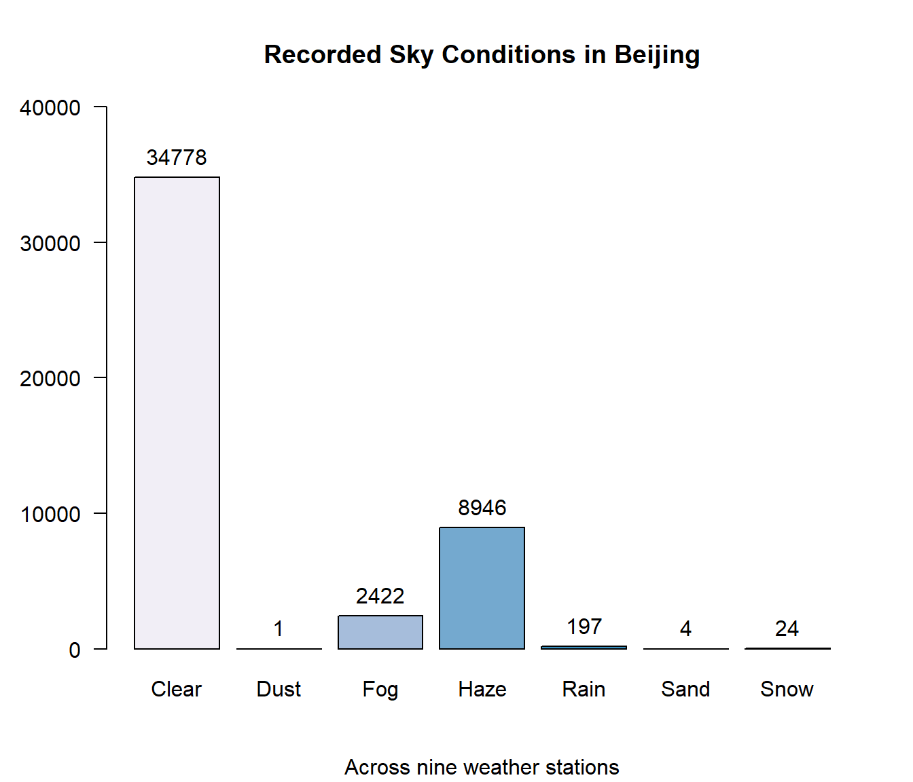
The bar-chart above indicates that four of the seven sky conditions are rarely observed. Looking at the proportions we can see that dust, rain, sand and snow make up less than 1% of the total observations. It makes sense that rain and snow is infrequent since Beijing’s climate is considered a “high-desert”.
round(sky.cond.pt, 3)## .
## Clear Dust Fog Haze Rain Sand Snow
## 74.998 0.002 5.223 19.292 0.425 0.009 0.052Taking this into account, a new bar-plot is plotted with only the weather observations whose frequency is greater than 1%.
# Calculate the frequency of each weather condition across all observations.
weather.df <- data.frame(table(cn.atmos$weather))
weather.df$percent <- weather.df$Freq / sum(weather.df$Freq) * 100
# Barchart where occurence is greater than 1%.
par(mar = c(5,5,2,1))
weather.df2 <- subset(weather.df, weather.df$percent > 1)
par(mfrow = c(1,2))
weather.bp2 <- barplot(
height = subset(weather.df$Freq, weather.df$percent > 1),
names.arg = subset(weather.df$Var1, weather.df$percent > 1),
horiz = TRUE,
las = 1,
xlim = c(0,40000),
main = "Count of cloudy, clear, and hazy days.",
sub = "where % is > 1",
xlab = "Frequency of Conditions",
col = rev(brewer.pal(n=3, "PuBu"))
#wes_palette(wes.colors[19], 3, type = "discrete")
)
legend(x = "topright",
title = "Count",
legend = rev(weather.df2$Freq),
fill = rev(brewer.pal(n=3, "PuBu"))
#rev(wes_palette(wes.colors[16], 3, type = "discrete"))
)
par(mar = c(2,2,1,0))
subset(weather.df$Freq, weather.df$percent > 1) %>%
pie(
labels = paste(round(
subset(weather.df$percent, weather.df$percent > 1)
), "%", sep = ""),
col = rev(brewer.pal(n=3, "PuBu")),
#wes_palette(wes.colors[16], 3, type = "discrete"),
main = "% of sky conditions."
)
legend(
x = 'topleft',
legend = subset(weather.df$Var1, weather.df$percent > 1),
fill = brewer.pal(n=3, "PuBu")
#wes_palette(wes.colors[16], 3, type = "discrete")
)
par(def.par)Next, weather conditions are compared by season to see what seasonal differences occur.
# by season
par(oma = c(3,0,3,2))
par(mar = c(3,5,2,0))
par(mfrow = c(2, 2))
for (i in unique(cn.atmos$season)){
barplot(
height = table(subset(cn.atmos$weather, cn.atmos$season == i)),
xlim = c(0, 14000),
horiz = TRUE,
beside = TRUE,
# main = i,
las = 2,
col = rev(brewer.pal(n=5, "PuBu")),
#wes_palette(wes.colors[2], 5, type = "discrete"),
main = i
)
legend(x = "topright",
title = "Count",
legend = table(subset(cn.atmos$weather, cn.atmos$season == i)),
fill = rev(brewer.pal(n=5, "PuBu")),
#wes_palette(wes.colors[2], 5, type = "discrete"),
cex = .7
)
}
mtext("Sky Conditions",outer = TRUE, side = 1, line = 1)
mtext("Sky Conditions by occurence, by season", side = 3, line = 1, cex = 1.5, outer = TRUE)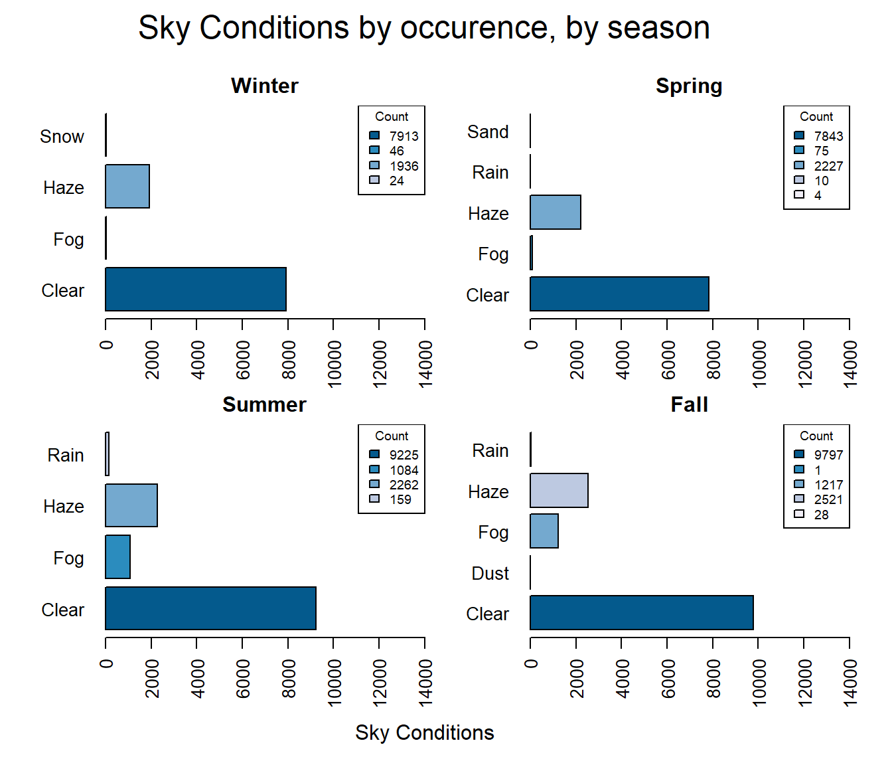
par(def.par)This data shows that Fall and Summer have the highest count of Clear observations. Snow only occurs during the winter, and Fog has a much higher occurrence during the summer and fall then during the winter or spring. What if we only look at days that are not clear?
par(oma = c(3,0,3,2))
par(mar = c(3,5,2,0))
par(mfrow = c(2, 2))
for (i in unique(cn.atmos$season)){
barplot(
height = table(subset(cn.atmos$weather, cn.atmos$season == i & !cn.atmos$weather == 'Clear')),
xlim = c(0, 3000),
horiz = TRUE,
beside = TRUE,
# main = i,
las = 2,
col = rev(brewer.pal(n=4, "PuBu")),
#wes_palette(wes.colors[2], 5, type = "discrete"),
main = i
)
legend(x = "topright",
title = "Count",
legend = table(subset(cn.atmos$weather, cn.atmos$season == i & !cn.atmos$weather == 'Clear')),
fill = rev(brewer.pal(n=4, "PuBu")),
#wes_palette(wes.colors[2], 5, type = "discrete"),
cex = .7
)
}
mtext("Beijing Sky Conditions",outer = TRUE, side = 1, line = 1)
mtext("Beijing Sky Conditions by occurence, by season, excluding Clear days", side = 3, line = 1, cex = 1.5, outer = TRUE)
par(def.par)These plots demonstrate that other than clear days haze is the condition that most often occurs in Beijing throughout the year.
2.2 Analysis on AQI
2.2.1 What is AQI?
The Air Quality Index (AQI) is the Environmental Protection Agency’s (EPA) index on air quality. It takes the measurement for six common pollutants and calculates a index based on the levels of the pollutants (AirNow.gov, n.d.).
The pollutants are:
Ozone (O3)
Very Small Particle Matter (PM2.5)
Particle Matter (PM10)
Carbon Monoxide (CO)
Sulfur Dioxide ( )
Nitrogen Dioxide (NO2)
Based on the AQI value, the EPA assigns the air quality into a category from ‘Good’ to ‘Hazardous’.
print.data.frame(aqi.guide[c("Message", "Low", "High", "Color" )])## Message Low High Color
## 1 Good 0 50 Green
## 2 Moderate 51 100 Yellow
## 3 Unhealthy for Some 101 150 Orange
## 4 Unhealthy 151 200 Red
## 5 Very Unhealthy 201 300 Purple
## 6 Hazardous 301 500 Maroon2.2.2 AQI Counts
The following table shows a count of the AQI levels by category across all observations and a histogram of the distribution.
table(cn.atmos$aqi_level)##
## Hazardous Moderate Unhealthy Unhealthy for Some
## 156 23525 13584 7779
## Very Unhealthy
## 1328par(mar = c(5.1,5.1,2.1,2.1))
hist(
cn.atmos$AQI,
main = "Counts of AQI, as distribution",
xlim = c(0, 500),
ylim = c(0, 30000),
breaks = 10,
las = 2,
axes = FALSE,
xlab = "AQI",
labels = TRUE,
ylab = "Frequency",
col = c(
"#ffff00",
"#ff7e00",
"#ff0000",
"#8f3f97",
"#8f3f97",
"#7e0023",
"#7e0023",
"#7e0023",
"#7e0023"
)
)
axis(1, at = c(seq(0, 500, 50)))
axis(2,
at = c(seq(0, 30000, 5000)),
las = 2,
labels = c(0, paste(c(5, 10, 15, 20, 25, 30), "k", sep = "")))
legend(x = "topright",
aqi.guide$Message,
fill = aqi.guide$HTML,
cex = .6)
par(def.par)The distribution is it positively skewed with the majority of the observations in the “Moderate” range between 50 and 100. The second observation is that there is never a US AQI level that is less than 50 in this data-set. This is concerning to me but is not surprising given the reputation that China has as a global producer of goods that uses coal as it’s main source of energy and taking into account that the amount of coal they burned increased slightly in 2017 (Reuters Staff, 2017).
2.3 AQI Distribution
Using the summary function shows that the mean of all of the AQI values is 114.2. It also shows that the max value is 500, which is the max value allowed on the US AQI scale. While the spread between the Max and the Min values is 448, the difference between the 3rd quartile and the 1st quartile is is less than 100. In addition, the difference between the 3rd quartile and the Min value is 155. This reinforces that the data is positively skewed.
summary(cn.atmos$AQI)## Min. 1st Qu. Median Mean 3rd Qu. Max.
## 52.0 68.0 100.0 114.2 157.0 500.0Weather and pollutants are affected by seasonal and business cycles. Comparing the population against the seasonal distributions shows that the spring months have the highest median, while the winter months have the most outliers to the right, but the lowest median. From this we can infer that during the spring in Beijing of 2017 the AQI was consistently higher, but the winter will had more extreme fluctuations.
boxplot(cn.atmos$AQI,
subset(cn.atmos$AQI, cn.atmos$season == "Summer"),
subset(cn.atmos$AQI, cn.atmos$season == "Fall"),
subset(cn.atmos$AQI, cn.atmos$season == "Winter"),
subset(cn.atmos$AQI, cn.atmos$season == "Spring"),
horizontal = TRUE,
names = c("2017", "Summer", "Fall", "Winter", "Spring"),
las = 1,
main = "Boxplots of AQI, by season.",
col = #rev(brewer.pal(n=5, "PuBu"))
wes_palette(wes.colors[7], 5, type = "continuous")
)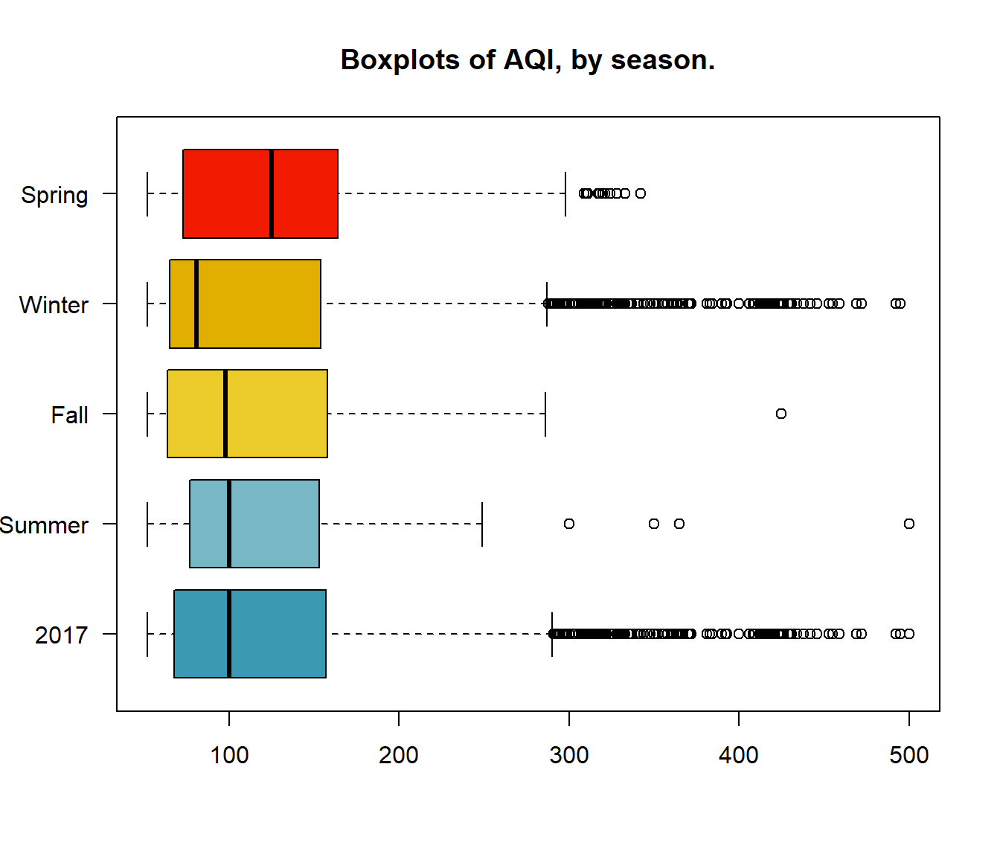
Further deconstruction of the data into monthly sets allows us to see that February and December had the most outlier to the right. While January had no outliers, but the highest median. The two groups of March, April, and May, as well as October, November, and December have a fairly close distribution, respectively. It’s possible that factors that effect AQI such as climate, traffic, or business cycles remained the same during these periods.
boxplot(
subset(cn.atmos$AQI, cn.atmos$month == "01"),
subset(cn.atmos$AQI, cn.atmos$month == "02"),
subset(cn.atmos$AQI, cn.atmos$month == "03"),
subset(cn.atmos$AQI, cn.atmos$month == "04"),
subset(cn.atmos$AQI, cn.atmos$month == "05"),
subset(cn.atmos$AQI, cn.atmos$month == "06"),
subset(cn.atmos$AQI, cn.atmos$month == "07"),
subset(cn.atmos$AQI, cn.atmos$month == "08"),
subset(cn.atmos$AQI, cn.atmos$month == "09"),
subset(cn.atmos$AQI, cn.atmos$month == "10"),
subset(cn.atmos$AQI, cn.atmos$month == "11"),
subset(cn.atmos$AQI, cn.atmos$month == "12"),
horizontal = TRUE,
names = c(
"Jan",
"Feb",
"Mar",
"Apr",
"May",
"Jun",
"Jul",
"Aug",
"Sep",
"Oct",
"Nov",
"Dec"
),
col = rev(brewer.pal(n=12, "Set3")),
#wes_palette(wes.colors[7], 12, type = "continuous"),
las = 1,
main = "Boxplots of AQI, by season."
)
2.4 AQI & Pollutant Distribution
The distribution of AQI can be compared with the distribution of the pollutants measured in the dataset.
boxplot(
cn.atmos$PM2.5,
cn.atmos$PM10,
cn.atmos$NO2,
cn.atmos$CO,
cn.atmos$O3,
cn.atmos$SO2,
cn.atmos$AQI,
horizontal = TRUE,
col = rev(brewer.pal(n=7, "Set3")),
#rev(wes_palette(wes.colors[8], 7, type = "continuous")),
names = c("PM2.5", "PM10", "NO2", "CO", "O3", "SO2", "AQI"),
las = 1,
main = "Boxplots of Air Pollutants",
xlab = "Pollutant Concentration"
)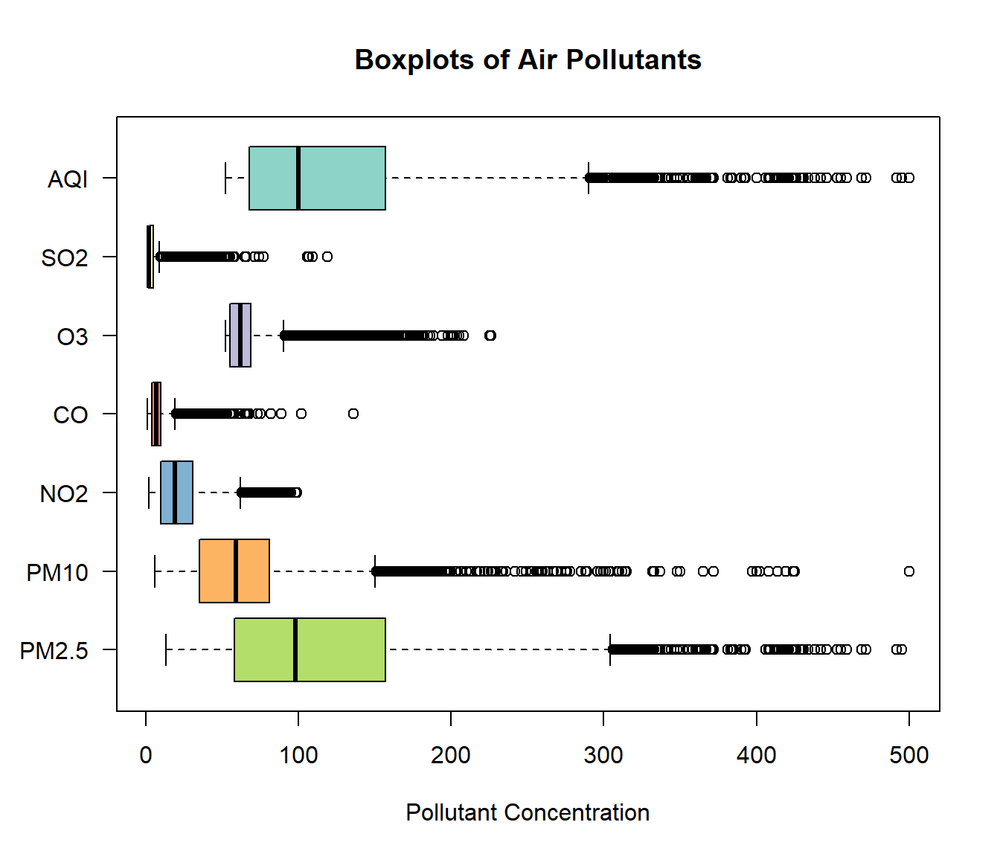
One observation is that the distribution of the AQI and PM2.5 are similar. An assertion could be made that there is correlation between AQI and PM2.5.
2.5 Distribution by Season
par(oma=c(3,3,3,3))
par(mfrow = c(2,2))
par(mar = c(2,4,2,1))
for (i in unique(cn.atmos$season)){
boxplot(
subset(cn.atmos$AQI, cn.atmos$season == i),
subset(cn.atmos$PM2.5, cn.atmos$season == i),
subset(cn.atmos$PM10, cn.atmos$season == i),
subset(cn.atmos$NO2, cn.atmos$season == i),
subset(cn.atmos$CO, cn.atmos$season == i),
subset(cn.atmos$O3, cn.atmos$season == i),
subset(cn.atmos$SO2, cn.atmos$season == i),
horizontal = TRUE,
col = rev(brewer.pal(n=7, "Set3")),
#rev(wes_palette(wes.colors[8], 7, type = "continuous")),
names = c("AQI", "PM2.5", "PM10", "NO2", "CO", "O3", "SO2"),
las = 1,
main = i
)
}
mtext("Pollutant Concentration",outer = TRUE, side = 1, line = 1)
mtext("Levels of pollutants, by season", side = 3, line = 1, cex = 1.5, outer = TRUE)
par(def.par)Parsing the data by season reveals that PM2.5 and AQI have a similar distribution throughout the year.
2.5.1 AQI and Correlation with Pollutants
Examining the relationship between the pollutant variables and AQI by using Pearson’s correlation coefficient returns a value of 0.969 for AQI to PM2.5. This indicates correlation.
cor(cn.atmos$AQI, cn.atmos$PM2.5, method = "pearson")
cor(cn.atmos$AQI, cn.atmos$PM10, method = "pearson")
cor(cn.atmos$AQI, cn.atmos$NO2, method = "pearson")
cor(cn.atmos$AQI, cn.atmos$CO, method = "pearson")
cor(cn.atmos$AQI, cn.atmos$O3, method = "pearson")
cor(cn.atmos$AQI, cn.atmos$SO2, method = "pearson")| Correlation Table | AQI |
| PM2.5 | 0.969 |
| PM10 | 0.842 |
| NO2 | 0.547 |
| CO | 0.672 |
| O3 | 0.059 |
| SO2 | 0.511 |
Viewing the data graphically, the linear upward-right trend line is fairly obvious. Although correlation is not causation, because AQI is derived from a combination of the six pollutants we can accurately observe that PM2.5 has a strong effect on the AQI level. The red linear model line generally follows the shape of the plot.
# Plot of PM and AQI
par(def.par)
par(oma=c(3,3,3,3), mar = c(3,4,1,1))
plot(cn.atmos$AQI,
cn.atmos$PM2.5,
pch = 20,
col = wes_palette(wes.colors[7], 1, type = "continuous"),
xlab = "",
ylab = "PM2.5",
las = 1
)
abline(lm(cn.atmos$AQI ~ cn.atmos$PM2.5), col = "red")
mtext("AQI",outer = TRUE, side = 1, line = 1)
mtext("Plot of AQI and PM2.5 levels", side = 3, line = 1, cex = 1.5, outer = TRUE)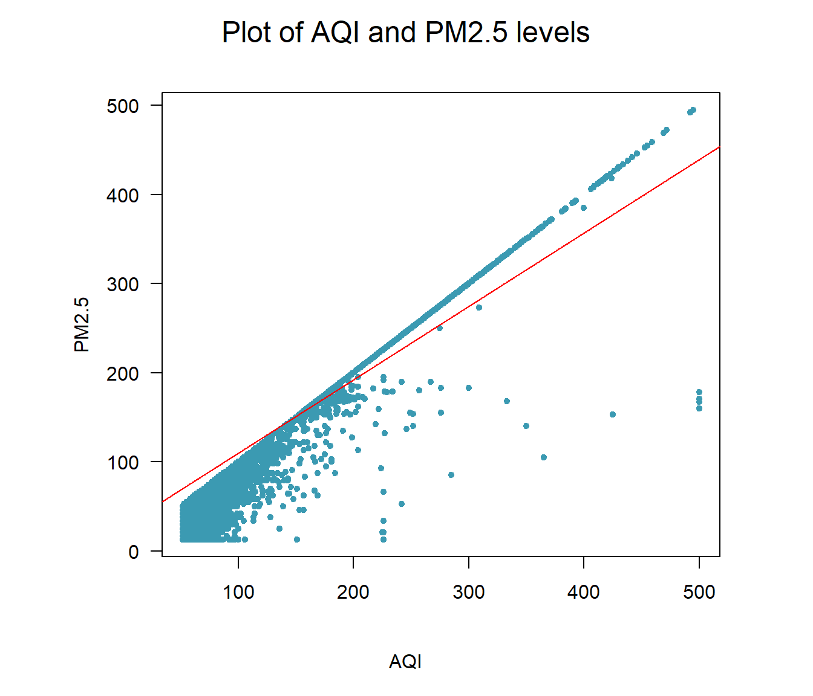
par(def.par)2.6 AQI and the Central Limit Theorem
The central limit theorem says that when many samples are taken that the means of the sample will be normally distributed around the mean. As more trials are run, the mean of the distribution will become closer to the mean of the population (University of California, Berkeley, n.d.).
| Population Mean | Population Standard Deviation |
|---|---|
| 114.215 | 50.4 |
aqi.mean <- mean(cn.atmos$AQI)
aqi.sd <- sd(cn.atmos$AQI)
set.seed(4099)
#Function for sampling
sample.and.mean <- function (x, sample.size, reps) {
temp.sample <- seq(1:reps)
xbar <- numeric(reps)
set.seed(4099)
for (i in temp.sample) {
xbar[i] <- mean(sample(x, size = sample.size, replace = FALSE))
}
return(xbar)
}
par(mfrow = c(2,2), oma = c(2,2,3,0), mar = c(4,3,1,0))
four.samples <- c(10, 20, 50, 500)
for (i in four.samples) {
xbar <- sample.and.mean(cn.atmos$AQI, i, 1000)
assign(paste("aqi.mean", i, sep = "_"), mean(xbar))
assign(paste("aqi.sd", i, sep = "_"), sd(xbar))
hist(
xbar,
main = paste("Sample size,", i),
col = brewer.pal(n=12, "PuBu"),
#wes_palette(wes.colors[7], 4, type = "continuous"),
probability = TRUE,
las = 1,
xlab = paste("Mean =",round(mean(xbar), 3), sep = " "),
xlim = c(70, 170),
ylim = c(0, .2),
ylab = ""
)
}
mtext("Simple Random Sampling with Various Sizes", side = 3, line = 1, cex = 1.5, outer = TRUE)
mtext("Density", side = 2, line = 1, cex = 1, outer = TRUE)
mtext("AQI", side = 1, line = 1, cex = 1, outer = TRUE)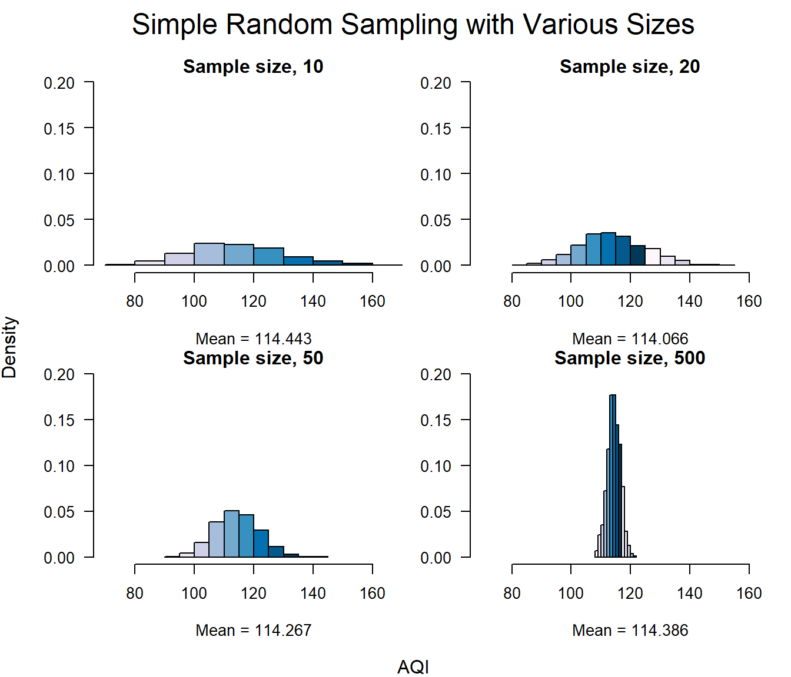
par(def.par)The AQI average of the entire dataset is 114.22 and the standard deviation is 50.4. Even though the distribution of the AQI data is positively skewed we can see from the histograms below that the average of the sample means is very close to the dataset mean. Each of the distributions has a slight skew to the right, but as the sample size increases the distribution becomes close to normal, and the standard deviation decreases. These changes are in-line with the central limit theorem and show that as we take many samples, the mean starts to localize around the population mean and the standard deviation decreases.
| Mean | Standard Deviation | |
|---|---|---|
| Population | 114.215 | 50.4 |
| S = 10 | 114.443 | 16 |
| S = 20 | 114.066 | 11.4 |
| S = 50 | 114.267 | 7.4 |
| S = 500 | 114.386 | 2.2 |
2.7 Additional Sampling Methods
The following section utilizes different sample methods on the AQI data to demonstrate the effectiveness of sampling in determining the distribution of a population. A sample size of 500 was used for these calculations.
2.7.1 Simple Random Sampling without Replacement
# SRSWOR
sample.size <- 500
set.seed(4099)
aqi.srswor <- srswor(sample.size, nrow(cn.atmos))
aqi.srswor <- cn.atmos[aqi.srswor != 0,]
par(mar = c(5,5,2,2))
hist(
aqi.srswor$AQI,
las = 1,
col = rev(brewer.pal(n=16, "BuPu")),
#wes_palette(wes.colors[4], 4, type = "continuous"),
main = "SRSWOR",
probability = TRUE,
xlab = paste("Sample size", sample.size, sep = " "),
xlim = c(0, 500),
ylim = c(0, .015),
breaks = 20
)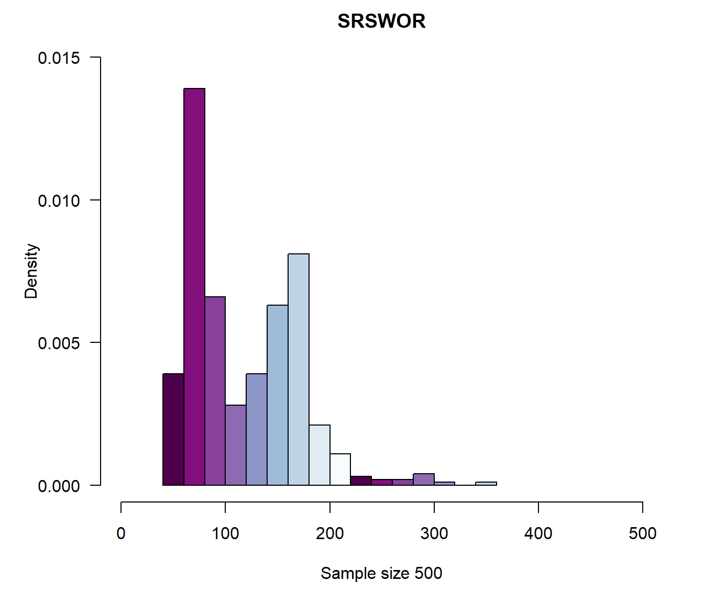
par(def.par)2.7.2 Systematic Sampling
# Systematic Sampling
N <- nrow(cn.atmos)
n <- 500
k <- (ceiling(N/n))
set.seed(4099)
r <- sample(k, 1)
my.index <- seq(r, by = k, length = n)
aqi.syst.samp <- cn.atmos[my.index,]
par(mar = c(5, 5, 2, 2))
hist(
aqi.syst.samp$AQI,
las = 1,
col = rev(brewer.pal(n=16, "BuPu")),
#wes_palette(wes.colors[4], 4, type = "continuous"),
main = "Systematic Sampling",
probability = TRUE,
xlab = paste("Sample size", n, sep = " "),
xlim = c(0, 500),
ylim = c(0, .02),
breaks = 20
)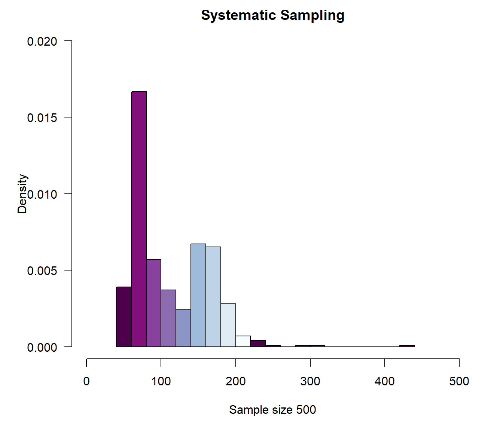
par(def.par)2.7.3 Stratified Sampling
# Stratified Sampling
cn.atmos.ord <- as.data.frame(cn.atmos[order(cn.atmos$aqi_level),])
# Remove "Hazardous" because the strata size for hazardous is equal to 0, and
# causes R to throw an error
cn.atmos.ord <- subset(cn.atmos.ord, cn.atmos.ord$aqi_level != "Hazardous")
cn.atmos.ord.freq <- table(cn.atmos.ord$aqi_level)
sample.size <- 50
stratum.size <- sample.size * cn.atmos.ord.freq / sum(cn.atmos.ord.freq)
# stratum.size <- as.vector(subset(stratum.size, stratum.size != 0))
stratum.size <- as.vector(round(stratum.size))
set.seed(4099)
aqi.strata <- strata(
cn.atmos.ord,
stratanames = c("aqi_level"),
size = stratum.size,
method = "srswor",
description = TRUE
)## Stratum 1
##
## Population total and number of selected units: 23525 25
## Stratum 2
##
## Population total and number of selected units: 13584 15
## Stratum 3
##
## Population total and number of selected units: 7779 8
## Stratum 4
##
## Population total and number of selected units: 1328 1
## Number of strata 4
## Total number of selected units 49aqi.strata.sample <- getdata(cn.atmos, aqi.strata)
hist(
aqi.strata.sample$AQI,
probability = TRUE,
las = 1,
col = rev(brewer.pal(n=16, "BuPu")),
#wes_palette(wes.colors[4], 4, type = "continuous"),
xlab = paste("Sample size", sample.size, sep = " "),
main = "Stratified",
xlim = c(0, 500),
ylim = c(0, .02),
breaks = 15
)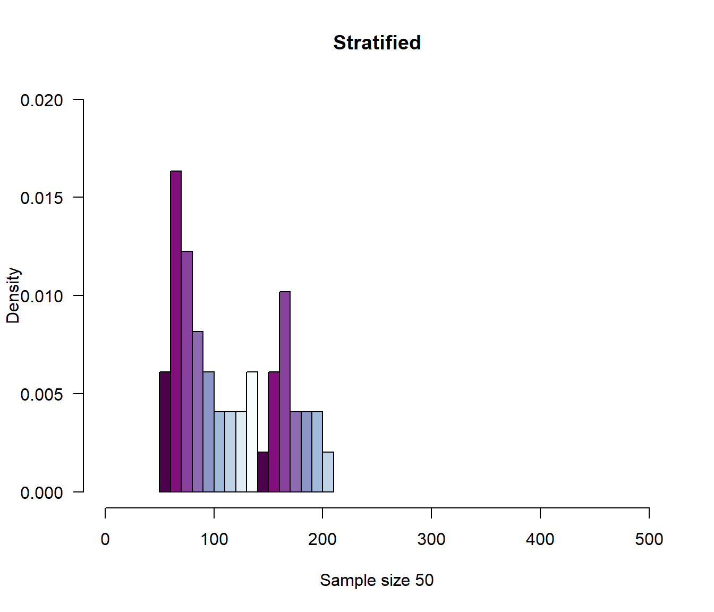
par(def.par)2.7.4 Comparing
# Compare the population and the three sample types
par(mfrow = c(2,2), oma = c(3,3,3,1), mar = c(2,3,1,1))
simple <- hist(
aqi.srswor$AQI,
las = 1,
col = rev(brewer.pal(n=16, "BuPu")),
#wes_palette(wes.colors[4], 4, type = "continuous"),
main = "SRSWOR",
probability = TRUE,
xlab = paste("Sample size", sample.size, sep = " "),
xlim = c(0, 500),
ylim = c(0, .02),
breaks = 20
)
syst <- hist(aqi.syst.samp$AQI,
las = 1,
col = rev(brewer.pal(n=16, "BuPu")),
#wes_palette(wes.colors[4], 4, type = "continuous"),
main = "Systematic Sampling",
probability = TRUE,
xlab = "",
ylab = "",
xlim = c(0, 500),
ylim = c(0, .02),
breaks = 20
)
strat <- hist(aqi.strata.sample$AQI,
probability = TRUE,
las = 1,
col = rev(brewer.pal(n=16, "BuPu")),
#wes_palette(wes.colors[4], 4, type = "continuous"),
xlab = "",
ylab = "",
main = "Stratified",
xlim = c(0, 500),
ylim = c(0, .02),
breaks = 15
)
hist(cn.atmos$AQI,
probability = TRUE,
main = "Population",
ylab = "",
xlab = "",
col = rev(brewer.pal(n=16, "BuPu")),
#wes_palette(wes.colors[4], 4, type = "continuous"),
las = 1,
xlim = c(0, 500),
ylim = c(0, .02)
)
mtext("Distributions of Various Sampling Methods", side = 3, line = 1, cex = 1.5, outer = TRUE)
mtext("Density", side = 2, line = 1, cex = 1, outer = TRUE)
mtext("AQI", side = 1, line = 1, cex = 1, outer = TRUE)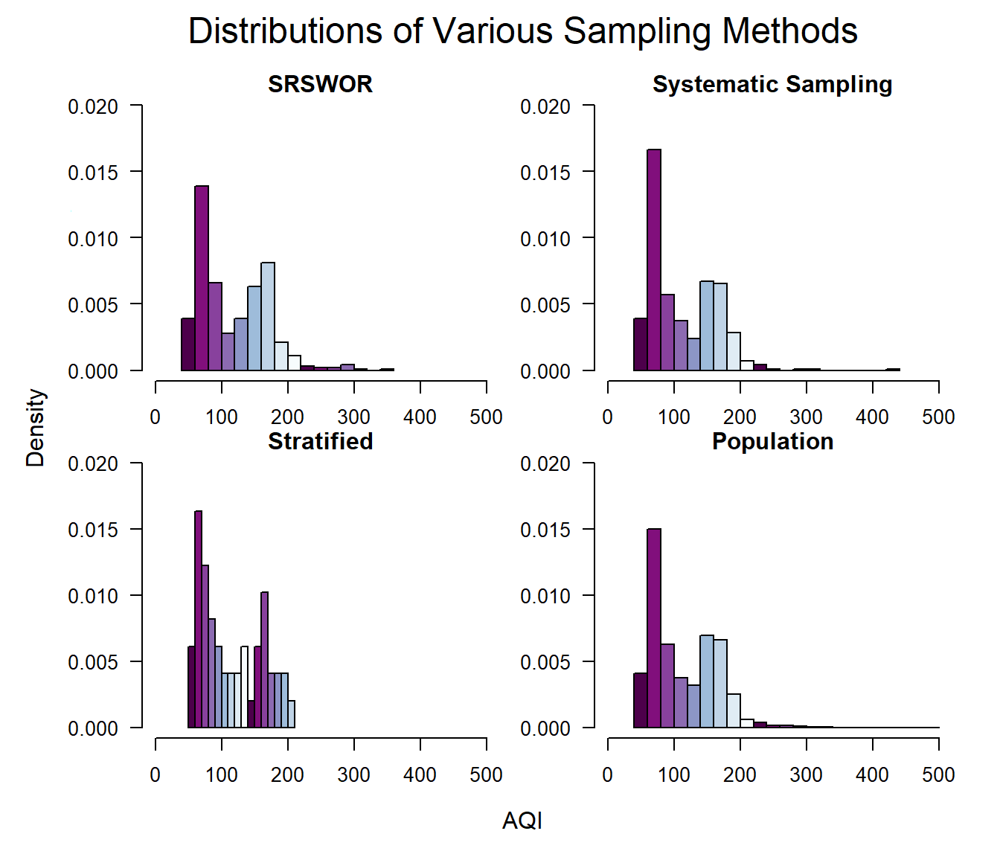
par(def.par)Comparing the three samples with the distribution of the population reveals that the distribution for each sample follows the distribution of the population. This reinforces that sampling is a good method for exploring the data within datasets, even if the population is not available.
2.8 AQI by Wind Direction
It is outside of the scope of this project to analyze the correlation between every variable, but one relationship that is examined is the relationship between the wind direction, wind strength, and AQI. Beijing controls pollution levels by moving pollution-producers such as factories into satellite cities and by limiting agricultural practices such as burning crop waste within a certain distance of the city center (Feng, 2018). An interesting question is does pollution from the satellite cities and from rural areas get blown into the city on strong-wind days?
To explore this, a library call ‘openair’ that allows for the creation of a “wind-rose” and “pollution-rose” to illustrate if a relationship exists is used.
2.8.1 Wind-Rose
print(wind.Fall, split = c(1, 1, 2, 2))
print(wind.Spring, split = c(2, 1, 2, 2), newpage = FALSE)
print(wind.Summer, split = c(1, 2, 2, 2), newpage = FALSE)
print(wind.Winter, split = c(2, 2, 2, 2), newpage = FALSE)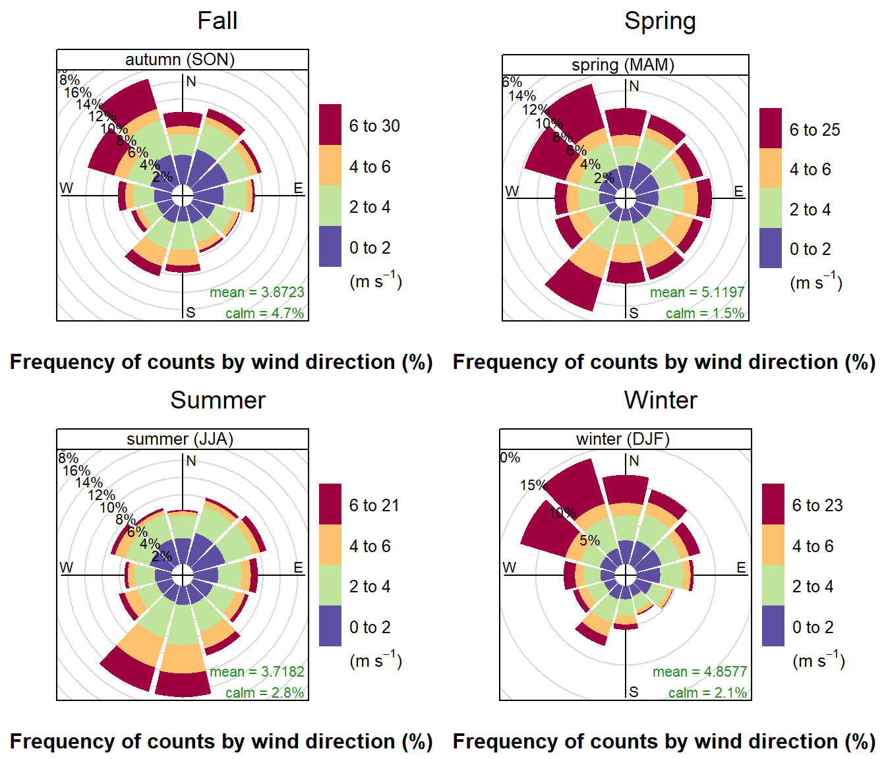
The first wind-rose shows wind-strength partnered with wind-direction, by season. Some observations are that the Winter and Fall both have strong winds coming from the NW, while the Spring has strong winds from both the NW and the SW. The Summer only has strong winds from the SW. One possible explanation for this is that in late spring the prevailing winds switch from NW to SW and then switch back during the Fall. Analysis on wind direction and speed by day would need to be done to determine if that was the actual pattern in 2017.
2.8.2 Pollution-Rose
print(pol.Fall, split = c(1, 1, 2, 2))
print(pol.Spring, split = c(2, 1, 2, 2), newpage = FALSE)
print(pol.Summer, split = c(1, 2, 2, 2), newpage = FALSE)
print(pol.Winter, split = c(2, 2, 2, 2), newpage = FALSE)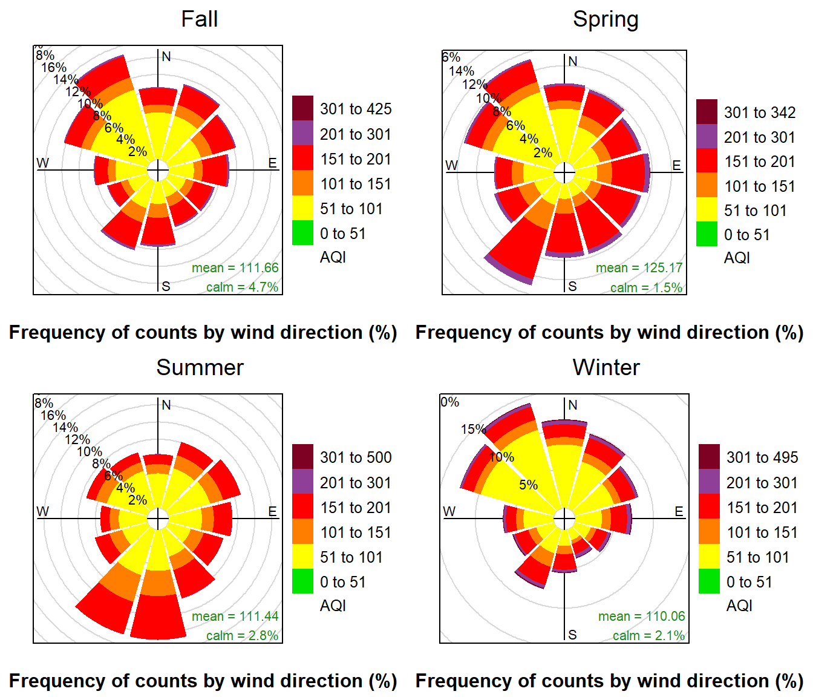
The pollution-rose also shows the counts of the wind-direction, but instead of indicating wind-speed by the color changes, the color-scheme indicates the levels of pollution that occurred when the wind was blowing from each direction.
Looking at these charts we can observe that there is the most purple in the winter and the spring. From that we can infer that hazardous AQI levels occur more frequently during those seasons. The Spring rose also shows the highest concentration of hazardous AQI observations when the wind is blowing from the SW. Correlation may exist, but it is not possible to infer if the AQI is higher during those observations because AQI was high for the whole season and the wind blew from the SW most often, or if AQI was high because the wind was blowing from the southwest and was carrying pollution into the city.
3 Conclusion
3.1 Known Issues and Recommendations
Data integrity in China is an unknown. A study in 2016 by Liang et al. , suggests that official AQI counts in China have a range of reliability.
According to Reuters (2018), PM2.5 levels for 2017 in Beijing fell by 39.6% from their 2016 values. Without data for the surrounding year, it is not possible to say if this was a trend, or an anomaly. A data-set that allows year-over-year changes should be analyzed to see if this trend continued.Overall,
3.2 Summary
Overall, this analysis has shown that in 2017 Beijing experienced mostly clear sky conditions, with haze and fog the other major weather conditions present. The observed occurrence of rain or other conditions was less than 1%. Around 53% of recorded AQI levels were in the “Moderate” range, with the other 47% being “Unhealthy for Some” or worse. AQI levels had the highest mean in the Spring, but the most extreme observations were recorded during the Winter. Sampling on the data demonstrated the validity of the Central Limit Theorem, and various sampling techniques were shown to follow the distribution of the population data. Finally, wind strength was shown to be the strongest from the NW throughout the year, with correlation to AQI levels unknown.
4 Appendix A
###Project Requirements | | Example 1 | Example 2 | Example 3 | |——————————————————————————————-|—————————|———————|:—————————————:| | Do the analysis for at least one categorical variable as in Module 3 | Weather Conditions | | | | Do the analysis for at least one numerical data as in Module 3 | AQI | Pollutants | | | Do the analysis as in Module 3 on at least one set of two+ variables | Weather & Season | AQI & Pollutants | AQI & Sky Conditions | | Pick a variable with numerical data and examine the distribution | AQI | AQI & Pollutants | | | Draw random samples of the data and compare to the central limit theory for that variable | AQI Central Limit Theorem | | | | Show how different sampling methods can be used. | SRSWOR | Systematic Sampling | Stratified Sampling | | Any feature not mentioned above. | OpenAir “windRose” | Rmarkdown | Correlation and linear regression line. |
5 Bibliography
AirNow.gov. (n.d.). AQI Basics | AirNow.gov. Retrieved March 1, 2020, from https://www.airnow.gov/aqi/aqi-basics/
Boguski, T. (2006, October). Understanding Units of Measurement (Issue 2). Center for Hazardous Substance Research - Kansas State University. https://cfpub.epa.gov/ncer_abstracts/index.cfm/fuseaction/display.files/fileid/14285
Feng, E. (2018, April 2). China moves its factories back to the countryside. Financial Times. https://www.ft.com/content/fe86f76c-1215-11e8-8cb6-b9ccc4c4dbbb
Liang, X., Li, S., Zhang, S., Huang, H., & Chen, S. X. (2016). PM2.5data reliability, consistency, and air quality assessment in five Chinese cities. Journal of Geophysical Research: Atmospheres, 121(17), 10,220-10,236. https://doi.org/10.1002/2016jd024877
Reuters Staff. (2018, February 28). CORRECTED-China’s 2017 coal consumption rose after three-year decline, clean energy portion up. Reuters News. https://www.reuters.com/article/china-energy-coal/corrected-chinas-2017-coal-consumption-rose-after-three-year-decline-clean-energy-portion-up-idUSL4N1QI48M
Teesing Enginering. (n.d.). Teesing - PPM / mg/m3 converter. Teesing. Retrieved February 15, 2021, from https://www.teesing.com/en/page/library/tools/ppm-mg3-converter
United States Environmental Protection Agency. (2018, September). Technical Assistance Document for the Reporting of Daily Air Quality – the Air Quality Index (AQI). Airnow. https://www.airnow.gov/sites/default/files/2020-05/aqi-technical-assistance-document-sept2018.pdf
University of California, Berkeley. (n.d.). Glossary of Statistical Terms. Berkley Stats. Retrieved March 3, 2021, from https://www.stat.berkeley.edu/~stark/SticiGui/Text/gloss.htm
Wang, H. (2019, March 27). Air pollution and meteorological data in Beijing 2017-2018 (Version 1) Dataset. Harvard Dataverse. https://doi.org/10.7910/DVN/USXCAK